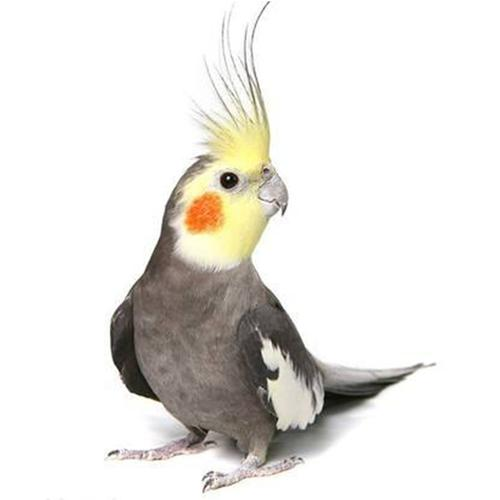
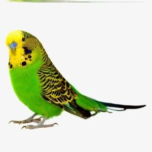

眼症 |
感冒 |
肺炎 |
胃炎 |
真菌性疾病 症状：鸟类真菌感染，一般会出现皮肤不适、呼吸道不适、消化道不适等症状。 防治方法：使用氟胞密淀、酮康唑、制霉菌素等。给药方法可用混饲、饮水、喷雾、注射等。 |
|  | 鸟类常见病 |  | ||
|---|---|---|---|---|
肠胃炎 症状:患鸟羽毛松弛，形体消瘦，精神委靡，粪便黏稠，带黄白色黏液，有恶臭。如不及时治疗，病鸟会衰竭而死。 防治方法:患鸟应移到温暖避风处隔离治疗。每天用痢特灵0.2-1毫克溶于糖水中滴喂。连喂3天。或用1-2毫克磺胺甲基嘧啶连续饲喂5天。此外，饲料中可加人适量木炭粉，以吸收其肠胃中的毒素。还可用矽炭银片10-20毫克，研碎，塞人鸟口中，然后用25%菊萄糖水1毫升徐徐滴入口中，见有吞咽动作后，才能继续滴入，否则会呛入长管中。每日2次，连续3天。痢特灵(呋喃唑酮)0.2-1毫克溶入1毫升25%的葡萄糖水中，用滴竹滴口服，每日用2次，连服3天。痢特灵有毒性，使用时应注意剂量。大蒜是常用的土药，以0.5毫克或1克捣碎口服，每日两次。 |
曲霉菌病 |
尾脂腺炎 症状：患鸟精神委靡，羽毛蓬松，食欲减退，尾脂腺红肿发热，并有白色脓状分泌物。 防治方法：先用碘酒对尾脂腺进行消毒，然后用消过毒的钢针将尾脂腺刺破，用手指自前至后挤出尾脂腺里的浓状粘液，使之通畅，直至冒出点血为止，然后再涂上碘酒。应将患鸟放在静处喂养，注意防寒，亦不能受热，并喂以营养较高的饲料。 |
输卵管炎 症状：初期鸟逐渐消瘦，偶尔有白色炎症物随粪便排出体外，继而炎症物逐渐变硬，使输卵管组织膨大变脆硬.进而进裂.影响日后产蛋。 防治方法：消炎药：适用于鸟输卵管炎引起的炎症和感染症状，如输卵管发红、肿胀和疼痛等。抗生素：适用于鸟输卵管炎的细菌感染，常见的抗生素有头孢菌素、红霉素等。镇痛药：适用于缓解鸟输卵管炎引起的疼痛症状，如补充镇痛药物可以减轻疼痛感。 |
体内寄生虫病 症状：口腔内分泌物多，喉部有黄白色斑，难以吞食饲料。 防治方法：可用驱虫净2-3毫克滴灌，以驱杀体内寄生虫。 |